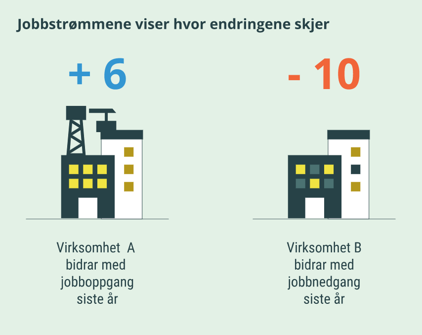

26 Antall arbeidsforhold og lønn
I dette kapittelet beskrives statistikken antall arbeidsforhold og lønn. Først omtales formål, populasjon samt jobb- og arbeidskraftsstrømmer (kapittel 26.1). I kapittel 26.2 beskrives forskjellen mellom foreløpige og endelige tall samt sesongjustering. Sammenheng med årlig lønnsstatistikk omtales i kapittel 26.3.
26.1 Formål, populasjoner og definisjoner
En av de samfunnsøkonomiske gevinstene ved opprettelsen av a-ordningen var hyppigere statistikk om endringer i antall jobber (arbeidsforhold), lønnstakere og lønn, samt gi tabeller over utviklingen på regionalt nivå (kommuner og fylker) som vi ikke har i arbeidskraftundersøkelsen (AKU) eller kvartalsvis nasjonalregnskap (KNR). Statistikken antall arbeidsforhold og lønn viser utviklingen i disse størrelsene både månedlig og kvartalsvis. Formålet med den kvartalsvise statistikken er å vise endringer i antall jobber (arbeidsforhold), antall lønnstakere og lønnsnivå for hvert kvartal sammenlignet med samme kvartal året før. Formålet med den månedlige statistikken er å belyse konjunkturutviklingen i Norge, målt ved endringer i antall jobber (arbeidsforhold), antall lønnstakere og kontantlønn.
Statistikken baserer seg på den klargjorte filen for arbeidsmarked og lønn, og dekker alle lønnstakere, jobber og lønn. Statistikken ble første gang publisert i januar 2018, med tall tilbake til 1. kvartal 2016. Tall for lønn tilbake til 1. kvartal 2016 ble inkludert i statistikken ved publiseringen av 2. kvartal 2018. Fra og med desember 2020 ble statistikken utvidet med månedstall. Formålet med månedlig statistikk er å gi et raskt bilde av konjunkturutviklingen i Norge, målt ved endringer i antall lønnstakere (personer), antall jobber (arbeidsforhold) og kontantlønn. Tabellene inneholder både foreløpige og endelige månedstall, see omtale i kapittel 23.1 og 26.2.
Populasjon
Statistikken omfatter bosatte og ikke-bosatte lønnstakere i alle aldersgrupper som jobber i virksomheter hjemmehørende i Norge. Da statistikken er basert på registerdata, gjøres beregningene av antall ved å telle opp antall lønnstakere og jobber (arbeidsforhold) innenfor bestemte grupper. Nivåtallene for lønn er gitt som gjennomsnitt, og det er brutto lønn før skatt som inngår i lønnsbegrepene.
For avtalt månedslønn og månedslønn er det kun jobber (arbeidsforhold) med utbetalt lønn innenfor lønnsbegrepet i lønnsstatistikken på tellingstidspunktet som inngår i beregningene av lønn. Alle jobber (arbeidsforhold) har ikke utbetalt slik lønn hver måned, og kan dermed inngå i opptellinger av jobber og som lønnstakere uten å være med i beregningen av gjennomsnittslønn. Kontantlønn omfatter derimot alle kontante ytelser fra arbeidsgiver som betyr at det omfatter mer enn lønnsbegrepet avtalt månedslønn og månedslønn. Bak gjennomsnittet for kontantlønn vil det derfor inngå flere arbeidsforhold enn for avtalt månedslønn og månedslønn.
Definisjoner
I statistikken kan vi grovt skille mellom jobbrelaterte-, arbeidsgiverrelaterte-, personrelaterte- og lønnsrelaterte variabler, samt definisjoner som omhandler jobb- og arbeidskraftsstrømmer. Se kapittel 2 for definisjoner av viktige begreper og vedlegg A.
Lønnsbegrepene i statistikken er begrenset til å omfatte kontante godtgjørelser fra arbeidsgiver til arbeidstaker for avtalt arbeidstid. Statistikken omfatter følgelig ikke naturalytelser, forsikringer og heller ikke trekkfrie utgiftsgodtgjørelser, feriepenger og lignende. Det er brutto lønn før skatt som inngår i lønnsbegrepene.
Det er de samme begrepene/definisjonen som benyttes i statistikkene antall arbeidsforhold og lønn som i den årlige lønnsstatistikken. Men noen begreper, som månedslønn og jobber (arbeidsforhold), har noe ulike betydning i statistikkene. Dette er omtalt i kapittel 26.3.
Kontantlønn
Kontantlønn omfatter alle kontante ytelser, og er ikke knyttet til avtalt arbeidstid, fra arbeidsgiver herunder avtalt månedslønn, faste og uregelmessige tillegg, bonus, overtidsgodtgjørelse, sluttvederlag og andre kontante ytelser, før skatt. Kontantlønn publiseres som gjennomsnitt per jobb (og ikke som heltidsekvivalent).
Kontantlønn omfatter utbetalte beløp, og tar ikke hensyn til arbeidstiden. Det er dermed ikke det samme som månedslønn som viser lønn for avtalt arbeidstid.
I statistikken antall arbeidsforhold og lønn publiseres månedlige tall på gjennomsnittlig kontantlønn per jobb, både med og uten sesongjustering (se omtale av sesongjustering i kapittel 26.2). Endringer i gjennomsnittlig kontantlønn kan blant annet skyldes:
Endringer i arbeidstid, fordi i denne statistikken deles kontantlønn på antall jobber og ikke arbeidstiden
Endring i lønnsnivået (lønnssats) i hver enkelt jobb
Endringer i sammensetningen av jobber med ulikt lønnsnivå. Rett i etterkant av koronautbruddet var det for eksempel en merkbar økning i gjennomsnittlig kontantlønn på grunn av bortfall av mange jobber med lavt lønnsnivå, deriblant mange deltidsjobber
I et normalt år varierer kontantlønnen etter et nokså regelmessig sesongmønster. For å sammenligne kontantlønn påfølgende måneder bruker vi sesongjusterte tall som prøver å ta hensyn til sesongvariasjoner, som for eksempel:
Utbetaling av bonuser øker kontantlønnen i perioden februar til april
Utbetaling av feriepenger øker kontantlønnen, hovedsakelig i juni
Sommerjobber med lavere lønnsnivå i perioden juni til august trekker ned kontantlønnen per jobb
Etterbetalinger i forbindelse med lønnsoppgjør øker kontantlønnen i måneden de utbetales. Dersom etterbetalingene kommer på de samme tidspunktene hvert år, vil de delvis kunne fanges opp av sesongjusteringen. I mange næringer er omfanget av etterbetalinger størst i perioden september til desember.
Økt aktivitet i en næring, eksempelvis i varehandelen i desember med flere jobber og mange som jobber mer enn normalt.
Jobbstrømmer og arbeidskraftsstrømmer
Antall jobber som er skapt i løpet av et år, viser bare en liten del av endringene som faktisk har skjedd på arbeidsmarkedet. Det finnes mer informasjon om strømningstall i artikkelen: Strømningstall viser bevegelsene av jobber og arbeidskraft som ligger bak nettoendringene og i et notat som beskriver mobiliteten i arbeidsmarkedet og måter å beskrive strømmer i arbeidsmarkedet.
La oss si at det i løpet av et år er blitt 60 000 flere jobber i Norge, og at antallet jobber har økt fra 2 940 000 til 3 000 000. I løpet av dette året vil det være virksomheter som har fått flere arbeidsplasser totalt, mens andre vil ha fått færre. Tabellene over jobbstrømmer viser omfanget av disse endringene. Bak en nettoendring på 60 000 kan jobbstrømmene for eksempel vise at virksomheter i vekst til sammen hadde en økning på 310 000 jobber mens andre virksomheter til sammen hadde en nedgang på 250 000 jobber.
I en tabell over jobbstrømmer vil en virksomhet som har fått 6 flere ansatte siste år bidra med 6 i den delen av tabellen som viser jobboppgang. Tilsvarende vil en virksomhet som har redusert arbeidsstokken sin med 10 bidra med 10 i den delen som viser jobbnedgang siste år. Alt i alt viser slike tabeller dermed summene av henholdsvis virksomhetenes jobboppganger og virksomhetenes jobbnedganger siste år. Slike tall kalles jobbstrømmer og de viser i hvilken grad ulike nærings- og sektorgrupper opplever jobboppgang og jobbnedgang.
Figur 26.1. Jobbstrømmer

Men, bak jobbstrømmene ligger enda større arbeidskraftsstrømmer. Hvis vi ser for oss en virksomhet med jobboppgang på 6 jobber det siste året, kan dette komme av at virksomheten ansatte 14 nye lønnstakere mens 8 lønnstakere sluttet. Det er her arbeidskraftsstrømmene kommer inn; mens jobbstrømmen i dette tilfellet er en jobboppgang på 6, består arbeidskraftsstrømmene her av 14 nye ansettelser og 8 avsluttede ansettelser. Tabeller over arbeidskraftsstrømmer viser det totale omfanget av slike nye ansettelser og avsluttede ansettelser. Bak en nettoendring på 60 000 flere jobber det siste året kan det for eksempel ligge 760 000 nye ansettelser og 700 000 avsluttede ansettelser.
Figur 26.2. Arbeidskraftsstrømmer
Jobbstrømmer: Jobboppgang og jobbnedgang i virksomheter
Jobbstrømmer dreier seg om jobboppgang og jobbnedgang i virksomheter. Det tas utgangspunkt i om antall jobber (arbeidsforhold) i en virksomhet har økt eller minket i løpet av det siste året for et gitt kvartal. Hvis det har vært flere jobber som har startet opp enn som er avsluttet i en virksomhet, sier vi at det har vært en jobboppgang. Hvis det i virksomheten har vært flere avsluttede jobber enn nyoppstartede jobber omtales det som jobbnedgang. Differansen mellom jobboppgang for virksomheter i alt og jobbnedgang for virksomheter i alt er nettoendringen fra samme kvartal ett år tidligere.
I tabellene er det summen av virksomhetenes jobboppganger og jobbnedganger i en gitt næring eller sektor som vises. Disse kan fordeles etter om de skyldes nyetablering eller nedlegging av virksomheter eller nedgang/vekst i eksisterende virksomheter mellom de to tidspunktene. Eksisterende virksomheter vil si at de hadde ansatte på begge tidspunkt. Nyetablering er definert som at virksomheten ikke var etablert eller var etablert men uten ansatte på starttidspunktet. Nedlagte virksomheter hadde ansatte på starttidspunktet, men var opphørt eller uten ansatte på sluttidspunktet.
Fordelt på næring, vil jobboppganger og jobbnedganger også komme som følge av at eksisterende virksomheter skifter næring mellom måletidspunktene. Alle jobber i en virksomhet som endrer næring vil telle som jobbnedgang i næringen de forlater og jobboppgang i næringen de kommer til. Virksomheten kan ha like mange jobber på begge måletidspunkt, men man vil likevel ende med jobboppgang i en næring og jobbnedgang i en annen. I tabellen i statistikkbanken gis det egne tall for jobboppgang og jobbnedgang som skyldes at eksisterende virksomheter skifter næring. Tilsvarende skjer når man fordeler jobboppgang og jobbnedgang etter sektor. Siden man kan bytte næring uten å bytte sektor og omvendt, blir antallet jobbnedganger og jobboppganger forskjellig i tabellene fordelt etter henholdsvis næring og sektor, men differansen mellom dem vil være den samme.
Arbeidskraftsstrømmer: Nyansettelser og avsluttede ansettelser
Arbeidskraftsstrømmer omhandler nyansettelser og avsluttede ansettelser, eller, som også nevnt ovenfor, bevegelser og mobilitet i arbeidsmarkedet det siste året. Nyansettelser er jobber (arbeidsforhold) som er del av statistikken inneværende kvartal, men som ikke eksisterte samme kvartal året før. Avsluttede ansettelser er jobbene som eksisterte foregående år, men som ikke dekkes av statistikken inneværende år.
Arbeidskraftsstrømmer oppstår ved at lønnstakerne i virksomhetene skiftes ut. Noen kommer til, noen slutter å være lønnstakere og noen bytter jobb. Tabellene i statistikkbanken fordeler arbeidskraftsstrømmene mellom de som bytter jobb, og de som går inn og ut av arbeidsmarkedet. Siden jobber måles per virksomhet vil de som skifter jobb mellom virksomheter i samme foretak også inngå i arbeidskraftsstrømmene. Statistikken ser kun på jobber på måletidspunktene. Kortvarige jobber mellom måletidspunktene inngår ikke i arbeidskraftsstrømmene.
Samlet sett vil summen av nyansettelser og avsluttede ansettelser (arbeidskraftsstrømmer) vise samme endring i antall jobber som jobboppgang og jobbnedgang i virksomhetene (jobbstrømmer). Nettoendringen fra ett år tilbake vil være differansen mellom nyansettelser og avsluttede ansettelser, eller differansen mellom virksomhetenes jobboppgang og jobbnedgang.
26.2 Samle inn og klargjøre
Når de klargjorte filene for arbeidsmarked og lønn er ferdige, starter vi med forberedelser til måneds- og kvartalspubliseringer. Populasjonen i denne statistikken er alle lønnstakere med aktive jobber i referanseuken i virksomheter hjemmehørende i Norge.
Statistikk per kvartal
Statistikken omfatter alle som er registrert som lønnstakere i den klargjorte filen for arbeidsmarked og lønn, men omfatter ikke utenlandske husholdninger (dvs. de med sektorkode 9000). Populasjonen til statistikken selekteres dermed på følgende måte:
ARB_ARBMARK_STATUS = 1 og FRTK_SEKTOR_2014 ulik 9000.
For kodelister se: Arbeidsforholdsopplysninger og Foretaksopplysninger.
Utenlandske husholdninger (sektorkode 9000) omfatter enhver person som har fast bopel utenfor Norge (uansett statsborgerskap). Som utenlandsk regnes og diplomater og militær representasjon i Norge, ansatte ved ambassader uten fast bopel i Norge og utenlandske turister.
Det er endelig versjon (versjon 2) av den klargjorte filen for arbeidsmarked og lønn som benyttes i kvartalstallene, se forskjellen på foreløpig og endelige tall nedenfor.
Statistikk per måned
For foreløpig versjon (versjon 1) begrenses dataene til denne populasjonen:
ARB_SYSS in (1a, 1b, 2a, 2b, 2c) og FRTK_SEKTOR_2014 ulik 9000.
For kodelister se: Arbeidsforholdsopplysninger og Foretaksopplysninger. Alle med negativ kontantlønn får denne justert til 0 kroner.
For endelig versjon (versjon 2) begrenses dataene til denne populasjonen:
ARB_SYSS in (1a, 1b, 2a, 2b, 2c, 3a, 3b) og FRTK_SEKTOR_2014 ulik 9000.
Kapittel 19 beskriver klassifisering av sysselsatte og det etableres en variabel som viser hvilken av reglene som har slått til (ARB_SYSS).
For kodelister se: Arbeidsforholdsopplysninger og Foretaksopplysninger. Alle med negativ kontantlønn får denne justert til 0 kroner.
For kontantlønn fjerner vi noen få ekstreme observasjoner. Det er snakk om arbeidsforhold som har en kontantlønn på over 2 millioner kroner, og der dette beløpet utgjør mer enn 3 prosent av kontantlønnen for hele næringsgruppen den tilhører (2-siffer næring).
Foreløpige og endelige tall
SSB får overført data fra Skatteetaten den 10. hver måned. For detaljer om datamottaket se kapitlene under Del 2. Samle inn. Basert på disse dataene lages det to ulike månedsversjoner, se også beskrivelse i kapittel 23.1: En første versjon av måneden som kan publiseres raskt etter månedens utløp, og en andre versjon av måneden før. I antall arbeidsforhold og lønn publiserer vi tall basert på både første og andre versjon. Månedstabellene inneholder tall fra første versjon, som omtales som foreløpige tall, i tillegg til tall fra andre versjon som omtales som endelige tall. I de kvartalsvise tabellene brukes kun tall fra andre versjon.
I de foreløpige tallene er det enkelte jobber/lønnstakere vi ikke fanger opp på grunn av tidsforsinkelser i rapporteringen til a-ordningen, men som vil inngå i endelige tall. Foreløpige tall vil derfor være mer usikre enn endelige tall, og endringstall og nivåtall i vil være forskjellige fra endringstall og nivåtall vi får i endelige tall.
Lønnstakere/jobber vi ikke fanger opp som følge av at vi benytter første versjon er forsinkede meldinger, erstatningsmeldinger for tidligere måneder samt arbeidsforhold med ulike tidsforsinkelser. Dette siste omfatter a) arbeidsforhold med fersk startdato uten lønn i statistikkmåneden, men med utbetalt lønn i måneden etter, samt b) arbeidsforhold uten lønn i statistikkmåneden, men med utbetalt i lønn både i måneden før og etter. Dette er arbeidsforhold med ARB_SYSS = 3a eller 3b, se kapittel 19.
Gruppen vi ikke fanger opp i de foreløpige tallene varierer fra om lag 25 000 til 100 000 jobber, altså rundt 1-3 prosent av alle jobber. At antallet man ikke fanger opp varierer såpass mye fra måned til måned betyr at både endringstall og nivåtall i den foreløpige versjonen av tallene vil være forskjellig fra de endringstall og nivåtall man får ved å benytte endelig versjon.
Usikkerheten knyttet til endringstall fra en måned til den etterfølgende er høyere enn for endringstall fra samme måned året før på grunn av sesongmønstre i ovennevnte arbeidsforhold (jobber). Tallene blir derfor sesongjustert slik at man kan sammenligne etterfølgende måneder.
Sesongjustering
I juli 2021 ble sesongjusterte månedstall publisert for første gang. Følgende månedsvise tidsserier sesongjusteres separat for 17 næringsgrupper og for foreløpige og endelige tall:
antall jobber
lønnstakere
gjennomsnittlig kontantlønn
Totalene for alle næringene blir litt ulikt behandlet i de ulike tidsseriene. For kontantlønn sesongjusteres totalen direkte, mens de to andre tidsseriene er laget indirekte ved at de underliggende sesongjusterte seriene aggregeres opp til en total.
Generelt om sesongjustering
For måneds- og kvartalstall er det ofte betydelige sesongvariasjoner som vanskeliggjør en direkte tolkning av utviklingen fra periode til periode. For å lette tolkningen av slike tidsserier, sesongjusteres mange tallserier ved bruk av X-13ARIMA-SEATS eller andre sesongjusteringsverktøy.
For mer generell informasjon om sesongjustering og begrepene knyttet til det, se dokumentasjon av sesongjustering i SSB.
Hvorfor sesongjusteres denne statistikken?
I mange næringer ser vi variasjoner i tallene som dukker opp med en viss regelmessighet hvert år. Et godt eksempel på dette finner vi innen jordbruk, skogbruk og fiske, der antall jobber øker kraftig i august og desember, med tilsvarende fall i november og januar. For å kunne følge denne underliggende utviklingen fra måned til måned uten påvirkning fra slike faste variasjoner, sesongjusteres tallene.
Serier som sesongjusteres
Følgende månedsvise tidsserier sesongjusteres separat for 17 næringsgrupper og for foreløpige og endelige tall:
antall jobber
lønnstakere
gjennomsnittlig kontantlønn
Totalene for alle næringene blir litt ulikt behandlet i de ulike tidsseriene. For kontantlønn sesongjusteres totalen direkte, mens de to andre tidsseriene er laget indirekte ved at de underliggende sesongjusterte seriene aggregeres opp til en total.
Vi finner sesongmønster i de fleste næringer. Serier hvor det ikke identifiseres et sesongmønster sesongjusteres ikke. Alle statistikkvariabler vurderes samlet for hver næring, både foreløpige og endelige tall. I noen tilfeller vil det være tydelige sesongmønster i én versjon og mer usikre sesongmønster i en annen versjon. Det gjøres da en helhetsvurdering hvor enten alle eller ingen av seriene sesongjusteres. De eneste seriene som ikke sesongjusteres er næringen Bergverksdrift og utvinning samt uoppgitt næring, og disse justeres derfor ikke i noen av seriene.
Prekorrigering
Før sesongjusteringen kan gjennomføres må seriene prekorrigeres for blant annet ekstreme verdier. Her følger vi European Statistical System (ESS) retningslinjer (ec.europa.eu) så langt det lar seg gjøre. Dersom det foreligger en klar tolkning av årsaken til de ekstreme verdiene, så blir de inkludert som forklaringsvariabel (regressor) i modellen. I vurderingen av ekstreme verdier er det gjort sammenligninger av både foreløpige og endelige tall. Dersom ekstremverdier er korrigert i endelig versjon er det bestemt å inkludere dem i foreløpig versjon.
Når det gjelder håndteringen av koronakrisen i sesongjusteringen følger vi Eurostat sine retningslinjer (github.com), som sier at effekten av koronakrisen ikke skal inngå i grunnlaget for sesongmønsteret. Det innebærer at vi inntil videre antar at sesongmønsteret er uendret etter februar 2020, og at vi korrigerer for den systematiske sesongvariasjon beregnet på data før koronakrisen.
Behandling av ekstreme verdier
Seriene kontrolleres for ekstreme verdier. Identifiserte ekstremer blir forklart/modellert med bruk av all tilgjengelig informasjon. Når det foreligger en klar tolkning av årsaken til de ekstreme verdiene blir de inkludert som regressor i modellen.
Kalenderjustering
Modellen kontrollerer for kalenderdager.
Metode for justering for virkedager
Modellen kontrollerer for virkedager.
Justering for bevegelige helligdager
Det kontrolleres for bevegelige helligdager.
Justering for skuddår
Det kontrolleres for skuddårseffekter.
Valg av modell
For å prekorrigere er det nødvendig å velge en ARIMA-modell, samt avgjøre om data bør log-transformeres eller ikke.
- Alle serier er log-transformerte.
Dekomponeringsrutiner
Dekomponeringsrutinen spesifiserer hvordan trend-, sesong og irregulær komponent blir dekomponert. De mest vanlige dekomponeringene er additiv, multiplikativ og log additiv.
Multiplikativ dekomponering benyttes i denne modellen. Årsaken til at kun multiplikativ dekomponering benyttes er at koronakrisen til tider kan gi store absolutte endringer på nivået i en serie, og en additiv dekomponering kan gi urealistiske utslag i visse tilfeller. Siden en multiplikativ dekomponering gir en prosentvis justering av serien, er dette valgt i alle seriene.
Optimale sesongfilter- og filterlengder velges automatisk av Jdemetra+.
Valg av sesongjusteringsmetode
Konsistens mellom rådata
I enkelte serier er det ønskelig at for eksempel sum (gjennomsnitt) månedsvise sesongjusterte tall for et år skal være identisk med sum (gjennomsnitt) månedsvise tall i den opprinnelige råserien.
Ingen konsistensbetingelser pålegges.
Konsistens mellom aggregat/definisjoner for sesongjusterte tall
I enkelte serier pålegges det konsistens mellom sesongjusterte totaler og underaggregater. I tillegg er det for enkelte tidsserier et forhold mellom de ulike seriene, for eksempel bruttoprodukt som er lik produksjon minus produktinnsats.
Ingen konsistensbetingelser pålegges.
Direkte eller indirekte metode
En direkte metode er anvendt dersom tidsserier for en total og tilhørende underaggregater alle er sesongjustert hver for seg. En indirekte metode er anvendt for total dersom tidsserier for de tilhørende underaggregater er sesongjustert direkte og det deretter er foretatt en aggregering til totalnivå.
Statistikkvariabelen kontantlønn anvender en direkte metode, der total og tilhørende underaggregater sesongjusteres hver for seg. Indirekte metode anvendes for statistikkvariablene lønnstakere og arbeidsforhold, der komponentene sesongjusteres direkte med samme tilnærming og programvare. Totalene blir beregnet ved å aggregere de sesongjusterte komponentene.
Tidshorisont for estimering av modell og beregning av korrigeringsfaktorer
Hele tidsserien brukes for å beregne modell og korrigeringsfaktorer. På grunn av anbefalt praksis rundt håndtering av koronakrisen i sesongjusteringen, så benyttes kun data fra januar 2016 tom. februar 2020.
Revisjonsrutiner i bruk
I henhold til anbefalinger fra ESS vil modellene som ligger bak de sesongjusterte tallene være gjenstand for en grundig gjennomgang en gang i året. Da søkes det blant annet etter nye sesongmønstre eller endringer i gamle. Resten av året holdes deler av modellene fast, såkalt delvis løpende korrigering. Det vil også kjøres automatisk søk etter signifikante ekstremverdier (alle typer) ved årlige gjennomganger eller spesielle behov.
Løpende eller faste valg i sesongjusteringen
Delvis løpende korrigering, der modellene inkludert evt. log-transformering, sesong- og trendfiltre, kalender-variable og ekstremverdier kun identifiseres årlig, mens respektive regresjonsparametere og faktorer re-estimeres løpende hver gang nye eller reviderte rådata er tilgjengelige.
Tidshorisont for publisering av reviderte tall
Hele serien blir revidert når sesongfaktorene reestimeres.
Spesielle tilfeller
Sesongjustering av korte tidsserier
Alle seriene er korte, og vil følgelig bli studert nøye videre.
Håndtering av koronakrisen
Koronakrisen påvirker statistikken på flere måter som er viktig å ta hensyn til når tallene skal tolkes. I de sesongjusterte tallene har vi fulgt Eurostat sine retningslinjer som sier at effekten av koronakrisen ikke skal inngå i grunnlaget for sesongmønsteret. Det innebærer at vi inntil videre antar at sesongmønsteret er uendret, og at vi korrigerer for den systematiske sesongvariasjon beregnet på data før koronakrisen.
Tilgjengelighet
Både rådata og sesongjusterte serier er tilgjengelige.
26.3 Sammenheng med årlig lønnsstatistikk
Tallene for lønn i statistikken er nært knyttet til den årlige lønnsstatistikken Statistikkene inkluderer flere felles kjennetegn og lønnsbegrepene har samme navn i de to statistikkene. Avtalt månedslønn er utledet likt, og er sammenlignbar i statistikkene. Månedslønn har noe ulik betydning og er ikke direkte sammenlignbar i de to statistikkene. I antall arbeidsforhold og lønn er det kun utbetalinger av uregelmessige tillegg og bonuser på tellingstidspunktet som inngår fordi den skal vise situasjonen i midtmåneden i kvartalet. I årlig lønnsstatistikk omfatter månedslønn utbetalinger av uregelmessige tillegg og bonus frem til og med november som er tellingsmåneden. Innrapporterte lønnsopplysninger gjennomgår samme kontroller og editeringer i de to statistikkene.
Begrepet jobber/arbeidsforhold brukes også i de to statistikkene, men er ikke definert likt. Det er antall arbeidsforhold og lønn som gir fullstendig tall på antall jobber. Hovedforskjellen mellom antall jobber med lønn i lønnsstatistikken og antall jobber i statistikken antall arbeidsforhold og lønn, er at sistnevnte også omfatter jobber hvor det er utbetalt andre lønnstyper enn det som inngår i lønnsstatistikken (f.eks. honorar) samt noen grupper som ikke har mottatt lønn i statistikkmåneden. Sistnevnte gruppe omfatter bl.a. personer som mottar ytelser fra NAV som erstatter lønn (sykepenger, foreldrepenger og svangerskapspenger) samt ulønnede permisjoner og permitteringer med en forventet varighet på under 90 dager (se mer informasjon om dette i kapittel 19 om klassifisering av sysselsetting). I den årlige lønnsstatistikken er det kun aktive arbeidsforhold med lønn i tellingsmåneden som inngår. Statistikken avgrenser populasjonen med formål om å måle lønn, ikke antall jobber. Derfor omfatter lønnsstatistikken kun jobber hvor det er utbetalt lønn etter lønnsstatistikkens lønnsbegrep, dvs. har utbetalt fastlønn, timelønn, faste tillegg, uregelmessige tillegg, og/eller bonus. Antallene som oppgis i lønnsstatistikken er derfor ikke et mål på antall jobber i de ulike yrkesgrupper, næringer, sektorer, osv.